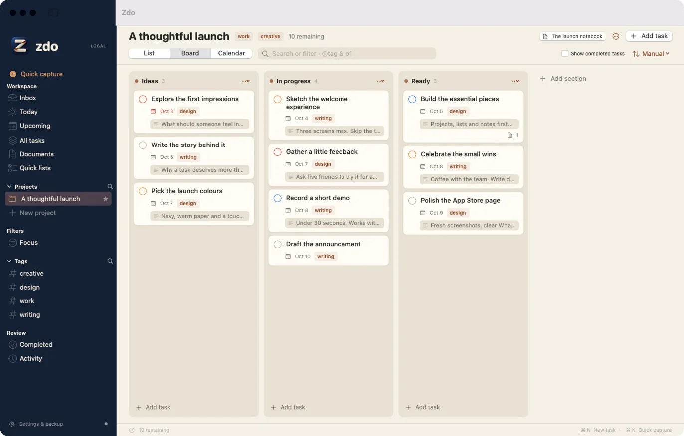
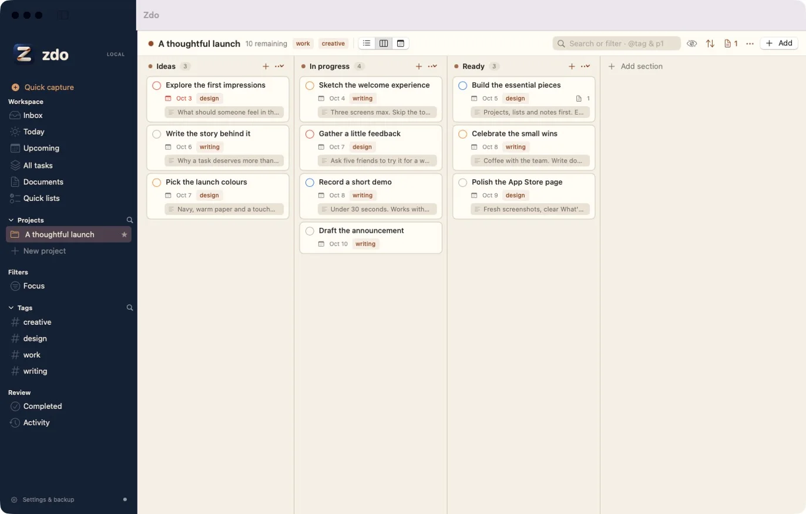
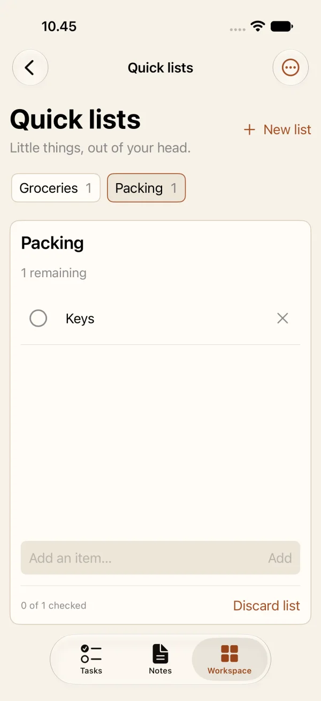

Jokainen tehtävä. Koko tarina.
Tehtävän taustalla on usein toimeksianto, suunnitelma, taustatietoa ja muutama muistiinpano seuraavista vaiheista. Zdossa tämä ajattelu elää Markdown-asiakirjoissa, jotka on linkitetty suoraan työhön.
- Yksi muistiinpano, monta paikkaa. Linkitä asiakirja projektiin, tehtävään tai alitehtävään ja avaa se mistä tahansa niistä.
- Kirjoita, jaa tai lue. Tavallista Markdownia taulukoineen, tarkistuslistoineen, kaavioineen, kaavoineen ja koodeineen, esikatseltuna tekstisi vieressä.
- [[Wikilinkit]] ja liitteet. Yhdistä muistiinpanot toisiinsa ja pidä kuvat ja tiedostot niiden mukana.

Tarkoituksella yksinkertainen.
Zdo tekee muutaman asian ja pysyy poissa tieltä. Projektit työlle, joka tarvitsee rakennetta. Pikalistat pienille asioille, jotka haluat vain pois mielestäsi: ruokaostokset, pakkaaminen, asioinnit. Merkitse tehdyiksi ja hävitä lista.
Jätetty pois tarkoituksella:
- Rekisteröitymiset
- Tiimityötilat
- Tekoälyominaisuudet
- Mainokset
- Sijaintimuistutukset
- Muotoilutyökalupalkit
Ei uutta tiliä. Ei kirjautumista. Mitään ei lähetetä meille.
Mihinkään ei tarvitse rekisteröityä. Avaa zdo ja ala kirjoittaa. Työtilasi on omalla laitteellasi. Haluatko sen myös iPhoneen? Synkronointi kulkee oman yksityisen iCloudisi kautta, joten tarvitset vain saman iCloud-tilin, jota jo käytät Macillasi ja iPhonellasi.
- Ei uutta tiliäEi rekisteröitymistä, sähköpostia tai salasanaa. Yhdellä laitteella ilman mitään tiliä.
- Ei seurantaaEi analytiikkaa, ei kolmansien osapuolten SDK:ita, ei käyttötelemetriaa, ei mainoksia.
- Ei zdo-palvelimiaTyötilaasi ei koskaan lähetetä meille.
- Synkronointi käyttää iCloudiasiKirjaudu iCloudiin samalla Apple-tilillä joka laitteella. Synkronointi on valinnainen.
- Vie tietosi mukanasiVie Markdown- ja PDF-tiedostoja ja tallenna automaattiset varmuuskopiot haluamaasi paikkaan.
- Myös tämä sivustoEi evästeitä, ei analytiikkaa, ei ulkopuolisia fontteja tai skriptejä.
Kaikki paikallaan.
Hyvän tehtävienhallinnan olennaiset asiat huolella tehtyinä, ilman mitään ylimääräistä.
- PäiväHuomenna
- Prioriteetti1
- Tunnistetyö
- ProjektiJulkaisu
- ToistuuJoka viikko
Pikakirjaus tunnistaa päivämäärät, prioriteetit, tunnisteet ja projektit kirjoittaessasi. Macilla paina ⌘K. Se ymmärtää myös englantia: tomorrow, every week.
Lista, taulu tai kalenteri
Jokainen projekti muistaa näkymänsä. Vedä tehtäviä osioiden ja päivien välillä.
Alitehtäviä niin syvälle kuin tarvitset
Jaa iso työ paloiksi, jotka voit oikeasti tehdä.
Päivämäärät oikeaan elämään
Ajoitukset, erilliset määräpäivät, prioriteetit, muistutukset ja toistuvat tehtävät.
Jaa zdoon
Lähetä linkkejä, tekstiä ja PDF-tiedostoja muista sovelluksista suoraan tehtävään tai muistiinpanoon.
Sano se ääneen
Sanele tehtävät ja muistiinpanot Macin ja iPhonen omalla sanelulla tai tallenna idea Sirin avulla.
Tuo muistutuksesi
Tuo listat Applen Muistutuksista nopean tarkistuksen jälkeen. Alkuperäiset pysyvät ennallaan.
Haku, joka löytää
Haku kattaa tehtävien kuvaukset ja linkitetyt muistiinpanot. Tallenna mikä tahansa haku suodattimeksi.
Varmuuskopiot hallinnassasi
Automaattiset varmuuskopiot valitsemaasi kansioon, palautettavissa Macilla tai iPhonella.
Suomeksi ja englanniksi
Käytä zdota kummalla kielellä tahansa ja vaihda kieltä milloin vain sovelluksessa.
A:sta Z:aan. Sitten zdo.
Kokeilin kaikenlaisia tehtävä- ja muistiinpanosovelluksia A:sta Z:aan. Mikään niistä ei yhdistänyt asioita niin kuin halusin. Siksi syntyi zdo: z + do. Vaihtoehto Z.
Halusin oikean projektityökalun rakenteen, hyvän muistikirjan rauhan ja paikan ruokaostoksille, joka ei esitä niiden olevan projekti. Ja halusin sen olevan omani: omilla laitteillani, ilman tiliä ja ilman ketään seuraamassa.
zdo Pro
Muokkausominaisuudet edellyttävät Applen hallinnoimaa tilausta, ja sama tilaus kattaa sekä Macin että iPhonen. Saatavilla olevat tilaukset, paikalliset hinnat ja mahdollinen kokeilujakso näkyvät sovelluksessa ennen ostoa.
Voit lukea ja viedä olemassa olevat tietosi myös tilauksen päätyttyä.